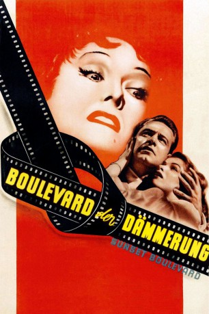
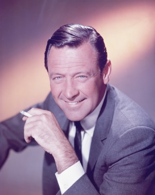
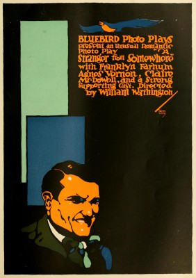
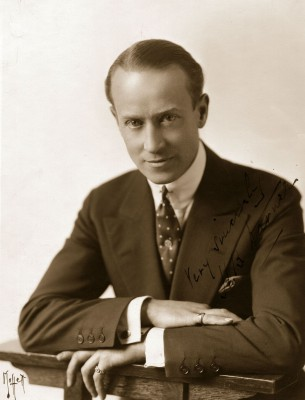
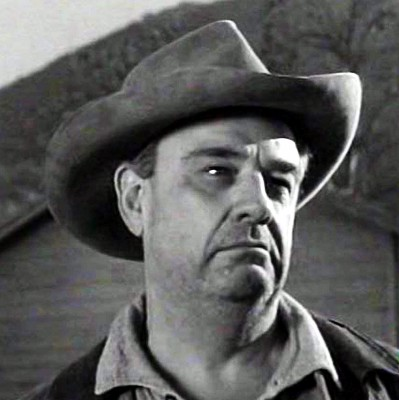
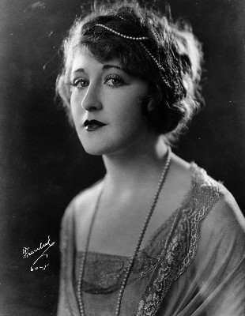
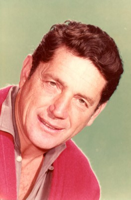
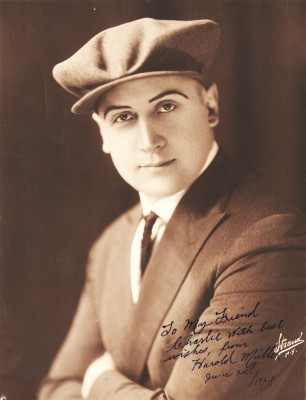
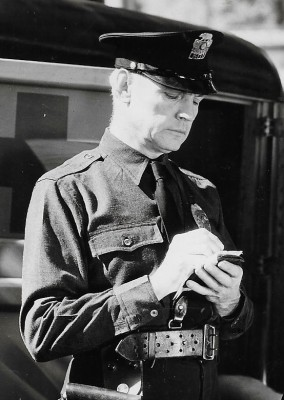
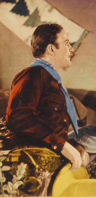

#6039 Boulevard der Dämmerung
Alternativ: Sunset Boulevard (Englischer Titel)
Auszeichnungen: 3 Oscars gewonnen für 8 Oscars nominiert 4 GoldenGlobes gewonnen
 
 IMDB-Wertung: 8.5 / 10
IMDB-Wertung: 8.5 / 10  IMDB-TOP-Platzierung: 57
IMDB-TOP-Platzierung: 57  Metascore: 0
Metascore: 0 
Der ebenso erfolg- wie mittellose Drehbuchautor Joe Gillis gelangt auf der Flucht vor seinen Gläubigern auf das Anwesen der gealterten Stummfilmdiva Norma Desmond. Norma hat nie aufgehört, von einem Comeback zu träumen, und überredet ihn dazu, ihr als Gegenleistung für die Aufnahme in ihr Haus beim Abfassen eines Drehbuches behilflich zu sein. Mit zunehmender Dauer der Zusammenarbeit erweist sie sich als immer besitzergreifender, weshalb er schließlich versucht, sich von ihr zu lösen - ein Versuch, den er mit dem Tod bezahlen muß.
Jahr: 1950
Dauer: 110 Minuten
FSK: 12
Land: USA Studio: Paramount PicturesTonspuren: DD2.0 - ,
Untertitel: Deutsch,
Auflösung: 1080p (1472x1080) Größe: 6707 MB
Genre: Drama,
Regisseur:  Billy Wilder
Billy Wilder
Drehbuch: Ronny Schalk
Soundtrack:
Darsteller:
-  William Holden als Joe Gillis
- Gloria Swanson als Norma Desmond
- Erich von Stroheim als Max Von Mayerling
- Nancy Olson als Betty Schaefer
- Fred Clark als Sheldrake
- Jack Webb als Artie Green
-  Franklyn Farnum als Undertaker
 Larry J. Blake als 1st Finance Man
Larry J. Blake als 1st Finance Man- Cecil B. DeMille als Cecil B. DeMille
- Hedda Hopper als Hedda Hopper
- Buster Keaton als Buster Keaton
- Anna Q. Nilsson als Anna Q. Nilsson
-  H.B. Warner als H. B. Warner
-  Fred Aldrich als Cop Who Drags Joe's Body from Pool , uncredited
- Gertrude Astor als Courtier , uncredited
- Edward Biby als Restaurant Patron , uncredited
-  Ruth Clifford als Sheldrake's Secretary , uncredited
- Eddie Dew als Assistant Coroner , uncredited
- Julia Faye als Hisham , uncredited
-  Joe Gray als Undetermined Role , uncredited
- Creighton Hale als Creighton Hale , uncredited
 Chuck Hamilton als Grip on DeMille Set , uncredited
Chuck Hamilton als Grip on DeMille Set , uncredited- E. Mason Hopper als Doctor , uncredited
- Gertrude Messinger als Hairdresser , uncredited
-  Harold Miller als Man on Golf Course , uncredited
- Bert Moorhouse als Gordon Cole , uncredited
- Ottola Nesmith als Undetermined Role , uncredited
- Eva Novak als Courtier , uncredited
-  Frank O'Connor als Courtier , uncredited
-  Jack Perrin als Detective , uncredited
- Archie Twitchell als Salesman at Men's Shop , uncredited
- Yvette Vickers als Giggling Girl on Phone at Party , uncredited
- Lloyd Gough als Morino
- Charles Dayton als 2nd Finance Man
- Ray Evans als Ray Evans
- Jay Livingston als Jay Livingston
- Joel Allen als Prop Man #2 , uncredited
- Danny Borzage als Accordionist , uncredited
- Ken Christy als Homicide Captain , uncredited
- John Cortay als Mac - Young Gate Guard at Paramount Studios , uncredited
- Archie R. Dalzell als Camera Operator , uncredited
- Peter Drynan als Tailor , uncredited
- Al Ferguson als Phone Standby , uncredited
- Gerry Ganzer als Connie - Betty's Roommate , uncredited
- Rudy Germane als Detective , uncredited
- Kenneth Gibson als Salesman at Men's Shop , uncredited
- Sanford E. Greenwald als Newsreel Cameraman , uncredited
- James Hawley als Camera Assistant , uncredited
- Len Hendry als Police Sergeant , uncredited
- Stan Johnson als First Assistant Director , uncredited
Datei: X:\1950-1959\Boulevard der Dämmerung (1950, FSK12, 1472x1080).mkv seit 24.04.2017
Festplatte: HD 1900-1970
 Es gibt insgesamt 141 Filme in der Gruppe '1950-1959'
Es gibt insgesamt 141 Filme in der Gruppe '1950-1959'